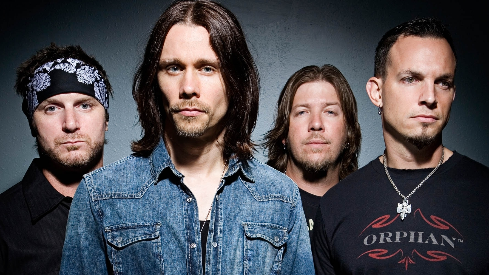

Ouça uma música da banda enquanto navega!
Informação Geral
| Ficha técnica | |
|---|---|
|  | |
| Origem | Orlando, Flórida, EUA |
| Período em atividade | 2004 - atualmente |
| Gênero | Metal Alternativo |
| Página oficial | www.AlterBridge.com |
Sobre
Alter Bridge é uma banda americana que toca hard rock e metal alternativo, formada em 2004 em Orlando, Flórida. O grupo surgiu como um novo projeto de Mark Tremonti (guitarrista e compositor), Scott Phillips (baterista) e Brian Marshall (baixista), todos ex-integrantes da banda Creed. Com a pausa nas atividades da banda, eles recrutaram Myles Kennedy, ex-vocalista do The Mayfield Four e atual vocalista da banda de Slash, como o vocalista principal e, posteriormente, também como guitarrista.
A música do Alter Bridge é caracterizada por uma mistura de hard rock, post-grunge, metal alternativo e, ocasionalmente, metal progressivo. A banda apresenta uma variedade de estilos, desde faixas pesadas com influência de heavy metal até canções mais leves, muitas das quais são tocadas de forma acústica durante os shows ao vivo.
História
Formação
Com a pausa do Creed em 2004, Mark Tremonti e Scott Phillips decidiram criar um novo projeto que fosse mais introspectivo e emocional, mas sem perder o peso das guitarras e a melodia característica do rock/metal. Eles começaram a tocar juntos sempre que possível e perceberam que compartilhavam a mesma visão musical, o que os motivou a voltar aos palcos.
Para completar a banda, chamaram seu amigo Brian Marshall, que havia deixado o Creed devido a desavenças com o vocalista Scott Stapp. Na época, Marshall trabalhava como produtor em seu estúdio caseiro, mas aceitou a proposta de imediato.
Por fim, recrutaram Myles Kennedy, que Tremonti conhecia de uma turnê do Creed em 1998. A poderosa voz de Kennedy trouxe a força necessária para as canções, completando a formação do Alter Bridge com Tremonti, Phillips, Marshall e Kennedy prontos para dar início ao novo projeto.
Dos Primeiros Álbuns até os Dias Atuais
O primeiro álbum do Alter Bridge, "One Day Remains," foi lançado mundialmente em 10 de agosto de 2004 pela Wind-Up Records, a mesma gravadora do Creed. As canções do álbum lembram inevitavelmente o Creed, já que Mark Tremonti, que participava ativamente da composição das músicas de sua banda anterior, compôs quase todas as faixas do Alter Bridge sozinho, com algumas contribuições de Myles Kennedy. O single de estreia, "Open Your Eyes," lançado em 2004, destacou-se na promoção do álbum, seguido pelo single "Broken Wings" em 2005. Uma das faixas mais especiais são "In Loving Memory," "Down To My Last," e "Metalingus".
Em 8 de outubro de 2007, a banda lançou seu segundo álbum de estúdio, "Blackbird." O álbum estreou na 37ª posição no UK Albums Chart e na 2ª posição no UK Rock Albums Chart. Nos Estados Unidos, alcançou a 13ª posição na Billboard 200 e a 4ª posição na Billboard Rock Album, vendendo mais de 47 mil cópias na primeira semana. Este álbum mostrou uma evolução no som da banda, com um instrumental mais pesado e uma identidade musical própria mais distinta, sem perder a melodia característica.
Em 2010, a banda iniciou a pré-produção de seu terceiro álbum, "AB III," gravado entre fevereiro e abril daquele ano em Miami. Com 14 faixas inéditas, o álbum foi lançado em 11 de outubro de 2010. Durante esse período, uma nova página do MySpace foi criada para o DVD ao vivo da banda, lançado em várias versões a partir de 4 de agosto. O vocalista Myles Kennedy emitiu um pedido de desculpas aos fãs pelo atraso na sua página do MySpace e no site oficial da banda.
Em 2013, o Alter Bridge voltou ao estúdio para gravar seu quarto álbum, "Fortress." Com 12 faixas, o álbum foi lançado em 8 de outubro na América do Norte e em 30 de setembro no restante do mundo.
Desde meados de 2015, a banda vinha trabalhando na gravação e composição de seu novo álbum, "The Last Hero." Anunciado em 26 de julho de 2016, o álbum teve dois singles lançados no Spotify: "Show Me a Leader" e "My Champion," com o lançamento completo do álbum ocorrendo em 7 de outubro de 2016.
Em junho de 2019, o Alter Bridge anunciou uma turnê no Reino Unido com Shinedown, Sevendust e The Raven Age, começando em dezembro de 2019. O sexto álbum de estúdio, "Walk the Sky," foi lançado em 18 de outubro de 2019. Mark Tremonti descreveu o álbum como tendo uma vibração de "filme de John Carpenter," com influências de sintetizadores antigos. O álbum foi bem recebido, sendo eleito um dos 50 melhores discos de rock de 2019 pelo portal Loudwire.
Em outubro de 2022, o Alter Bridge lançou seu sétimo álbum de estúdio, "Pawns & Kings", que rapidamente se destacou pela sua sonoridade intensa e riffs de guitarra marcantes. O vocalista Myles Kennedy e o guitarrista Mark Tremonti exploraram uma gama diversificada de estilos, desde faixas pesadas até semibaladas melódicas. A produção do álbum, focada em uma abordagem mais orgânica e menos carregada, contribuiu para uma experiência auditiva direta e cativante. "Pawns & Kings" foi recebido com entusiasmo, tanto pela crítica quanto pelos fãs, consolidando a posição do Alter Bridge como uma das bandas de rock mais influentes da atualidade.
Integrantes
Discografia
Álbuns de Estúdio
- 2004 - One Day Remains
- 2007 - Blackbird
- 2010 - AB III
- 2013 - Fortress
- 2016 - The Last Hero
- 2019 - Walk The Sky
- 2022 - Pawns & Kings
Álbuns ao vivo
- 2009 - Live from Amsterdam
- 2012 - Live at Wembley Stadium
- 2017 - Live at the O2 Arena + Rarities
- 2018 - Live at the Royal Albert Hall
Curiosidades
- O nome "Alter Bridge" é inspirado por uma ponte em Detroit, perto da casa de infância de Mark Tremonti.
- Myles Kennedy também é vocalista da banda solo de Slash.
- A música "Metalingus" é usada como tema de entrada pelo wrestler Edge da WWE.
Trilhas Sonoras
O Alter Bridge solidificou sua presença no mundo da música não apenas com suas produções de estúdio, mas também através de contribuições significativas para trilhas sonoras. Em 2005, suas faixas "Save Me" e "Shed My Skin" encontraram um lar nos álbuns "Elektra: The Album" e "Fantastic 4: The Album", respectivamente, adicionando uma dimensão sonora envolvente aos universos cinematográficos dos super-heróis. Mais tarde, em 2008, a poderosa "Rise Today" fez sua marca na trilha sonora da série "Terminator: The Sarah Connor Chronicles", proporcionando uma trilha sonora arrebatadora para as aventuras cheias de ação dos mundos futurísticos.
Em 2011, o Alter Bridge continuou a deixar sua marca, desta vez no mundo dos videogames, com "Isolation" se juntando à trilha sonora de "Dirt 3". Com sua fusão distinta de riffs de guitarra pulsantes e letras intensas, a música complementou perfeitamente a energia e a emoção da experiência de corrida, fornecendo uma trilha sonora dinâmica para acompanhar a adrenalina das pistas e a competição acirrada. Essas colaborações evidenciam a versatilidade e o alcance da música do Alter Bridge, que transcende os limites do palco e da tela, deixando uma marca indelével em múltiplos aspectos da cultura contemporânea.